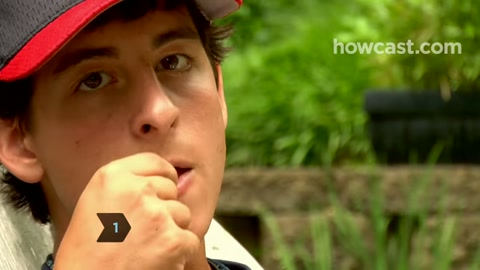
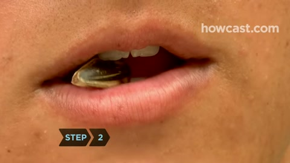
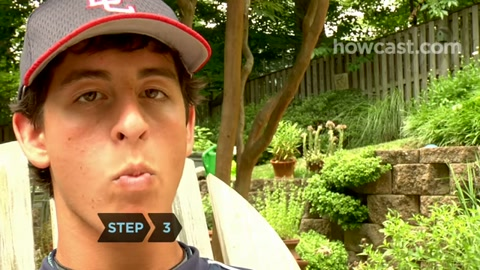
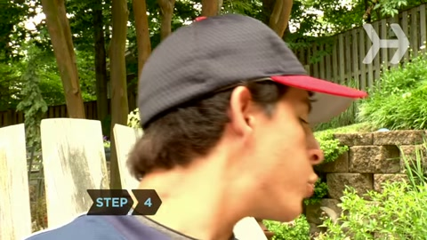
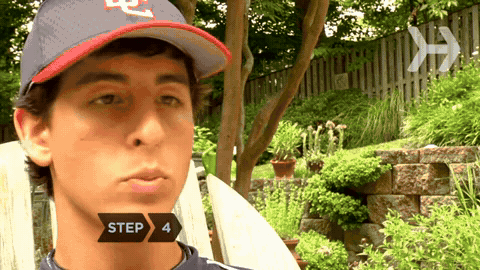

HUBB · Quick visual reference
Crack the husk. Eat the kernel.

1. PlacePut one in-shell seed between the teeth.

2. CrackUse a small bite to open the husk.

3. SeparateTongue and teeth separate kernel and husk inside.

4. SpitBring the husk to the lips and spit it out. Eat only the kernel.
Whole sequence · Short edited reference · GIF

Husk exit · Half speed · GIF
Howcast reference excerpts: internal separation and shell spitting are identified by narration; tiny fragments are hard to resolve. Shell-bag collection is HUBB usage guidance; it is not shown in this tutorial.
Husk = waste. Kernel = food. Collect husks in the shell bag. Never return them to the food sachet or cup.
Alternative: bring the husk to the lips and remove it with fingers instead of spitting.
Every HUBB package
| Format | How it is used | Where |
|---|
| Single · 30 g | Open one sealed sachet to snack. | Baqala / supermarket |
| Retail case · 24 × 30 g | 720 g trade case; sell sachets individually. | Traditional / modern retail |
| Travel cup · 5 × 30 g | 150 g; open lid, take one sachet. Keep others sealed. | Supermarket / petrol station / travel |
| Family mix · 20 × 30 g | 600 g; four flavours, five sachets each. Share sealed sachets. | Ecommerce / modern key accounts |
| Shell bag | Only discarded husks go here. It is not a food bag. | During snacking |
Flavours: Classic Sea Salt · Garlic Salt · Pepper Lime · Fire Salt.
24-sachet case is the planned retail format; the image shows display styling, not a verified 24-unit carton. Use the latest cream-and-brush artwork unchanged.
Motion excerpts: Howcast · reference and analysis. No commercial reuse licence for third-party footage is granted here. HUBB packaging images are supplied design references.